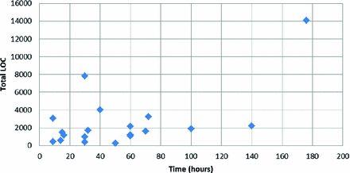

1 Introduction
Test-driven development (TDD) [3] is a technique for designing and developing software widely adopted by agile software development teams. TDD was proposed by Kent Beck in the late 1990s as a practice of the Extreme Programming. Motivating the programmer to think about many aspects of the feature before coding it, this technique suggests an incremental development in short cycles by first writing unit tests and then writing enough code to satisfy them [14]. TDD consists of small iterations by following three steps: (1) write a test for the next bit of functionality you want to add; (2) write the functional code until the test passes; and (3) refactor both new and old code to make it well-structured [3]. TDD focuses on unit tests to ensure the system works correctly [8]. By following this method of testing before coding, the software can be incrementally developed without a need for detailed designing it upfront [15].
Many studies have highlighted the benefits of TDD in software quality by comparing it with other software development approaches. Other studies sought to understand how TDD is addressed as design and development practice by software developers. As a result of this type of investigation, some studies point out that programmers experienced in TDD report that this practice increases the confidence in the result of their work and ensures a good design and fewer defects in code [7]. As a consequence, these factors collaborate to increase the quality of software [22].
Nevertheless, programmers considered novices to the TDD might experience difficulties when applying this practice for the first time. As an effect of these initial challenges, programmers can become unmotivated because they do not feel productive using TDD [2]. Understanding the purpose of testing is one of the main difficulties reported by developers [9]. Despite the difficulties, most of them recognize that when traditionally developing software – i.e., testing only at the end – they are subject to spending more time searching for bugs and trying to evolve the software.
In this paper, we present the results of an exploratory study involving software developers, many of them with many years of professional experience, but that had never tried programming using TDD. This study was carried out in the context of an agile project course at the postgraduate level of a research institute. Our goal is to gain insights into the initial perceptions of developers regarding the TDD effects on design and development practice.
Unlike many studies that usually propose simpler activities to evaluate the use of TDD involving, for example, the coding of a single class or function; our study offered to the participants to develop projects with complete features. Thus, participants developed medium size projects (i) addressed to different domains and (ii) using different programming languages. From the participants’ projects, we collected information about their perceptions concerning the perceived benefits, encountered difficulties, and their opinion about the quality improvement of the software attributed to the use of TDD.
The remainder of this paper is organized as follows. In Sect. 2 we review related work. In Sect. 3 we describe the empirical study. In Sect. 4 we present the results of the thematic analysis. In Sect. 5 we discuss our findings. Finally, Sect. 6 presents the conclusions, limitations, and future work.
2 Related Work
A growing number of empirical studies have been conducted both in academic or industrial settings to investigate the effects of TDD over the software quality (internal and external), productivity, and test quality [9, 18, 23].
Gupta and Jalote [15], in an academic setting, evaluated the impact of TDD on activities like designing, coding, and testing. By comparing it with the conventional code development, their results suggest that TDD can be more efficient regarding development efforts and developer’s productivity. However, the study participants reported higher confidence in code design for traditional approach than needed for the TDD approach.
Janzen and Saiedian [17] conducted some experiments to compare the effects of TDD against Test-Last-Development (TLD) approach, involving students in undergraduate courses (early programmers) and professional training courses (mature developers). Their study revealed that mature developers are much more willing to adopt TDD than early programmers. However, they identified confounding factors between the two groups which may have interfered in their results – such as project size, TDD exposure time, programming language, and individual and paired programming style.
In an industrial setting, George and Williams [13] complemented a study about efficiency and quality of test cases with a survey to gather perceptions from 24 professional pair-programmers about their experiences using TDD. On average, the survey results indicate that 80% of professional programmers consider TDD an effective practice; and 78% claimed that practice improves programmers’ productivity. Also, their results indicated that the practice of TDD facilitates a more straightforward design, and the lack of initial design is not an obstacle. However, for some of the programmers, they found that the transition to the TDD mindset is the most significant difficulty.
In an experiment involving teams composed of 3–6 undergraduate students, Huang and Holcombe [16] evaluated TDD effectiveness focusing on aspects related to productivity, coding effort, testing effort, and external quality. One result of the comparative study is that TDD programmers spent a higher percentage of time on testing and a lower portion of time on coding than TLD programmers. Moreover, they found that, statistically, TDD programmers neither delivered software of higher quality nor were more productive, although their productivity was on average 70% higher than that of TLD. In this study, they used external clients’ assessment as a measure of quality rather than defect rate.
Vu et al. [24] also examined the TDD effects on both the internal and external quality of the software and the programmers’ perception of the methodology. They carried out an experiment with 14 upper-level undergraduate and graduate students, who were divided into three teams. Two of the three teams utilized TDD while the remaining team utilized a TLD. In contrast to several previous studies, their results indicated that the TDD did not outperform TLD in many of the measures; and concerning the programmer’s perception, although were not significant, the results indicated a preference for TDD.
Aniche and Gerosa [1] carried out a qualitative study with 25 software practitioners, aiming mainly to investigate developers’ perceptions of how the practice of TDD influences class design. Most of the interviewees were professionally experienced and had some practice in TDD. As a result, they found that the constant need of writing a unit test for each piece of the software forces developers to create testable classes. For this reason, developers agreed that the practice of TDD helps them to improve their class design.
Scanniello et al. [21] also conducted a qualitative investigation on practical aspects related to TDD and its application with focus groups, in which 13 master students and five professional software developers discussed their experience in the programming using TDD. Among the findings, they reported that applying TDD can be tricky without the knowledge of advanced unit testing techniques – e.g., mock objects; and that participants admit that refactoring is often neglected. When TDD is compared to TLD, they found that novices believed that TDD improves productivity, whereas professionals consider that TDD decreases productivity in developing software. Romano et al. [20] conducted an ethnographically-informed study with 14 graduate students and six professionals software developers, to understand the values, beliefs, and assumptions of TDD. From their observations, they found that, in most cases, developers wrote production code in a quick-and-dirty way to pass the tests, and often ignored refactoring.
In analyzing the studies mentioned above, we have noted that most of them compare the effects of TDD to a test-last approach. Nevertheless, there is no consensus on their results, since each experience involves different contexts and other potential influence factors, as observed by Janzen and Saiedian [17]. In our study, we are not directly comparing TDD with any other approach, but we are taking into account the participants’ prior experience with traditional approaches (e.g., TLD). Notably, there are few qualitative investigations exploring the TDD effects from the viewpoint of the developers [20, 21]. In this study, we also are interested in exploring and knowing the opinion of the developers about the use of TDD, its effects and other factors that imply in its application. However, we intend to capture perceptions and draw conclusions regardless of the programming language or application domain.
3 Empirical Study
This section first describes the study context and participants’ profile recruited. Secondly, we present some characteristics of the projects implemented by the participants using TDD. Finally, we outline the methods of collection and analysis employed in this study.
Table 1.
Projects characterization
# | Project | Programming language | Programmers’ experience (years) |
|---|---|---|---|
S1 | System for decoding avionics data bus | Python | 2 |
S2 | Model-based Testing Tool | Java | 3 |
S3 | Annotation Validation System | Java | 5 |
S4 | System for E-Commerce | Java | 5 |
S5 | Implementation of parametric curves | C++ | 5 |
S6 | System for generation of geospatial data | C++ | 15 |
S7 | Management system for coffee shop | C++ | 9 |
S8 | Extraction of historical software metrics | JavaScript | 13 |
S9 | Web service for conversion of XML models | Java | 10 |
S10 | Implementation of training algorithm | Java | 14 |
S11 | System for weather forecast data gathering | PHP | 12 |
S12 | Drawing application for digraphs | Java | 12 |
S13 | API for mathematical calculus | Java | 22 |
S14 | Framework for gamification | Java | 2 |
S15 | API for searching of code-annotations | Java | 5 |
S16 | Metadata-based framework | Java | 7 |
S17 | Classification of remote sensing images | C++ | 11 |
S18 | Framework for Adaptive Object Models | Java | 19 |
S19 | API for mining of software dependencies | Java | 10 |
Subjects and context. The 19 subjects involved in this study were recruited in the context of the postgraduate course of Agile Projects from the National Institute for Space Research in Brazil, in the third period of 2015 and 2016. Participants were experienced professionals – had about ten years on average of experience in software development.
During the course, all subjects received the same training about TDD based on Java programming language and JUnit framework. The training consisted of face-to-face classes and practical exercises applied in Java. However, the concepts have been taught to be applied using any language. Based on these concepts and practical exercises, the subjects had to develop an application using TDD individually. We have established that each subject was responsible for defining the type and goal of the application, and for choosing the programming language, the IDE and the unit test tools. This variability of projects would allow us to mitigate a bias observed in other studies, and to bring the implemented software closer to real needs. The subjects had around two months to develop the application in their work environment. After the development period, the participants were asked about their experience using TDD. However, it is important to point out that neither the answers nor the software delivered was considered for evaluation, to allow the participants greater freedom of speech.
As shown in the Table 1, subjects had at least two years of experience in programming. However, most of them had between 5 and 22 years of experience and good skill with the language of programming chosen for the project. For analysis, we have considered more experienced those subjects with more than five years of experience. There were only five subjects with shallow knowledge about the language used in their projects. Regarding experience with TDD, only two subjects had previously used TDD but had minimal experience of it in their practice.
Projects characterization. The participants had defined their projects with different purposes, i.e., all projects were different from each other. Table 1 shows a brief description of each project. As displayed in Table 1, many of them were focused on applications for the field of space science and technology. As for the programming language, 12 projects were developed in Java; and the other languages used were C++ (4), Python (1), PHP (1) and JavaScript (1). About the type of project, 12 participants reported that their projects were part of their academic research; 3 participants developed part of the real projects that they had been developing in the industry, and other 3 participants developed personal projects. Of all the projects, twelve of them used as their starting point an existing code, while the others seven were built from scratch.
Data gathering and analysis. In this field study, a structured questionnaire with open, semi-open and closed-ended questions was used as the principal means of data collection from the software projects carried out by the study participants. For the open and semi-open questions, in particular, we have using a thematic analysis technique [4], through which we looked for themes/patterns across qualitative data to capture the critical points about developers’ perceptions regarding the TDD practice.
Thematic analysis (TA), such as proposed by Braun and Clarke [5], is a theoretically flexible approach to analyzing qualitative data widely used to arrange and describe a data set in rich detail, and also to interpreter various aspects of the research topic. According to them, this approach can be used as a realist method to reports experiences, meanings and the reality of participants; or as a constructionist method to examine how events, realities, meanings, experiences are the effects of a range of discourses and behaviors.
Further, TA can be used to analyze different types of data; to work with large or small data-sets, and to produce data-driven or theory-driven analyses [6]. Thus, to accomplish the analysis of the participants’ answers, we carried out a thematic analysis following the six steps proposed by Braun and Clarke [5]: (i) familiarizing with the data; (ii) generating initial codes; (iii) searching for themes; (iv) themes review and refinement; (v) defining and naming themes; and (vi) writing the final report. The first author performed the thematic analysis, and then the other two authors reviewed the themes and helped in refining them.
4 Findings
In this section, we first present some information about the projects developed by the study participants, and then we describe the results of the thematic analysis grouped into five topics related to the questionnaire: (i) difficulties in applying TDD; (ii) test failures and unexpected situations; (iii) key benefits of TDD; (iv) software design; and (v) mock objects. The results of the thematic analysis are presented in tables. The questions asked the participants are under the headings of each table. For each question, we present the themes and sub-themes that have emerged from participants’ answers. Alongside each theme and sub-theme, we included the number of participants who mentioned something about them. Also, we included some participants’ quotations. Such quotations, originally in Portuguese, were translated into English by the authors.
Projects size and test coverage. Once the applications had different purposes (see Table 1), our intention was not to compare the projects with each other. However, we collected some software metrics, which have been provided to us by the participants, to obtain information on the size of the applications, and on the coverage of tests. Table 2 presents the metrics related to: (i) total of hours spent in implementation; (ii) number of lines of code; (iii) number of classes (or functions, or modules); (iv) number of methods; (v) number of lines in the test code; (vi) number of classes (or files) in the test code; and (vii) number of methods in the test code. Additionally, Table 2 also shows the percentage of test coverage, and the tools used to support programmers in the unit tests.

Fig. 1.
Development time and total lines of code
Table 2.
Software metrics
# | TIME | LOC | NOC | NOM | t-LOC | t-NOC | t-NOM | Coverage % | Tool |
|---|---|---|---|---|---|---|---|---|---|
S1 | 30 | 132 | 5 | 17 | 246 | 5 | 20 | 100.0 | PyUnit |
S2 | 9 | 2669 | 11 | 42 | 400 | 1 | 8 | 96.2 | JUnit |
S3 | 50 | 103 | 7 | 27 | 136 | 6 | 52 | 85.3 | JUnit |
S4 | 60 | 1214 | 47 | 236 | 959 | 19 | 55 | 95.8 | JUnit |
S5 | 30 | 359 | 9 | 125 | 603 | 8 | 41 | 96.7 | GTest |
S6 | 72 | 1627 | 38 | 296 | 1,619 | 12 | 49 | 75.7 | Gtest |
S7 | 176 | 11,316 | 146 | 2,320 | 2,762 | 1 | 38 | 80.0 | QTestLib |
S8 | 15 | 830 | 6 | 85 | 654 | 4 | 44 | 98.7 | Mocha |
S9 | 16 | 843 | 9 | 27 | 307 | 2 | 25 | 87.2 | JUnit |
S10 | 9 | 285 | 4 | 28 | 140 | 3 | 11 | 98.4 | JUnit |
S11 | 14 | 463 | 9 | 32 | 101 | 3 | 11 | 71.4 | PHPUnit |
S12 | 32 | 1,109 | 26 | 108 | 579 | 3 | 43 | 57.6 | JUnit |
S13 | 60 | 809 | 19 | 62 | 376 | 13 | 58 | 85.1 | JUnit |
S14 | 30 | 3,231 | 41 | 169 | 4,588 | 14 | 237 | 79.1 | JUnit |
S15 | 100 | 1,442 | 8 | 63 | 428 | 1 | 21 | 58.8 | JUnit |
S16 | 70 | 1,228 | 69 | 256 | 390 | 163 | 144 | 83.0 | JUnit |
S17 | 60 | 547 | 2 | 14 | 544 | 3 | 24 | 100.0 | GTest |
S18 | 40 | 2,000 | 3 | 10 | 2,000 | 3 | 10 | 78.5 | JUnit |
S19 | 140 | 1,674 | 56 | 415 | 536 | 7 | 69 | 49.0 | JUnit |
Regarding development time, about 84% of the projects took in the range of 9 to 72 h to be implemented considering the production code and the unit tests (see Fig. 1). The amount of LOC of production ranged from 103 to 11,316; while the number of LOC of tests ranged from 101 to 4,588. Given the total number of LOC (production and testing), almost half of the projects (47%) range from 1,000 to 2,000 lines of code. As for the code coverage, 12 projects (about 63%) reached over 80% coverage. We point out that testing coverage is evidence that reinforces the use of TDD by participants.
Difficulties in applying TDD. Analyzing the participants’ answers, we identified four themes on difficulties encountered by developers when developing the software through TDD: (i) the lack of culture and skill; (ii) difficulties related to unit testing; (iii) difficulties related to using TDD for software design; and (iv) difficulties with mock objects. There were other difficulties mentioned by the participants, which were more related to other technical problems than to the development method itself. Table 3 presents the themes and sub-themes that emerged from our analysis of difficulties reported by participants. There was only one participant who mentioned that he had no difficulty in applying TDD.
Table 3.
Difficulties in applying TDD
Question: What major difficulties did you have in the development? | ||
|---|---|---|
Themes | Sub themes | Quotes |
Lack of culture and skill (n = 14) | create test first (n = 6) | “The biggest difficulty was thinking about the test before having the functionality, that is, I don’t know how to get started.” [S3] |
control on the size of steps (n = 3) | “To follow the steps, instead I wanted to implement the main functionality as soon as possible.” [S5] | |
low productivity(n = 3) | “Due to lack of knowledge of TDD, in the beginning, it was required more time to get the job done.” [S16] | |
keep pace (n = 2) | “... keep pace with TDD (write test / red bar / feature / green bar / refactor); sometimes I got caught “unconsciously” jumping phases.” [S8] | |
Unit testing (n = 10) | test quality (n = 8) | “To define the scope of the tests: some tests required implementation of more than one function.” [S8] |
support tool (n = 2) | “In the case of Java IDE, there is a lot of support, but in languages like PHP, I found it harder because of IDE did not give me so much support.” [S4] | |
Software design (n = 3) | how to design using TDD (n = 3) | “To think about how the API will behave before you design it.” [S14] |
Mock objects (n = 2) | use or not use (n = 2) | “In this way, many “mock objects” would need to be created to isolate the behavior that is carried out by my study, being that this mining code is very repetitive, but it is very small and very little would be effectively tested.” [S19] |
Test failures and unexpected situations. During the tests, participants had to deal with some sort of unexpected situation. As an answer to this question, we found that 42.1% of participants (8 of 19) pointed out that such situations occurred when a new test passed when it should have failed; for 68.4% of participants (13 of 19) when a previous test failed unexpectedly when a new feature was being introduced; for 57.9% of participants (11 of 19) when a code refactoring generated failure in some test; and for 78.9% of participants (15 of 19) when an error discovered in another way motivated them to add a new automated test. Table 4 presents the themes and sub-themes related to the test failures and unexpected situations reported by participants. In this case, the sub-themes refer to the facts leading to the unexpected situations.
Table 4.
Test failures and unexpected situations
Question: Tell us about unexpected situations that occurred during testing. | ||
|---|---|---|
Themes | Sub themes | Quotes |
New test passes unexpectedly (n = 8) | implementation errors (n = 4) | “Upon verification, I noticed errors in the implementation that were later corrected.” [S17] |
bad writing test (n = 3) | “In some cases, the tests needed more manipulation, in others of better-elaborated assertions.” [S19] | |
incomplete method (n = 1) | “I did not realize that one of the methods was still incomplete.” [S2] | |
A previous test failed unexpectedly (n = 11) | insertion of new rules (n = 6) | “Faced with a new functionality, part of the implementation that previously passed the test, stopped working, because it became necessary to implement more functional rules.” [S12] |
in the integration (n = 5) | “The tests failed during the integration of the two frameworks.” [S16] | |
Refactoring generates failures (n = 8) | changing methods (n = 2) | “It happened several times, after moving some method or changing the operation of some method.” [S1] |
implementation failure (n = 3) | “Thus, it was necessary to adjust these tests to the new situation, and in other cases fix the implementation.” [S12] | |
data structures (n = 2) | “It occurred mainly when data structures were changed.” [S6] | |
addition of a new pattern (n = 1) | “Some tests failed when a new pattern (responsibility chain) was added.” [S3] | |
New test for new discovered bugs (n = 15) | unthought cases (n = 11) | “Changing some tests to reject, I realized that it was the case to add one more test to cover that situation.” [S1] |
artifact errors (n = 2) | “The encoding of the imported file did not match the header encoding declaration.” [S11] | |
mock objects (n = 1) | “I discovered the error by performing tests using mocks objects.” [S16] | |
in the integration (n = 1) | “It happened during the integration of the class that makes the requisitions.” [S8] | |
Key benefits of TDD. Concerning the perceived benefits of TDD, we identified four themes: (i) testing coverage, (ii) code quality, (iii) software design, and (iv) baby steps. Table 5 presents the themes and sub-themes that emerged from our analysis of benefits reported by participants. The most benefits are related to what the test coverage provides the developer, such as a safe refactoring, confidence to evolve and change the code, bug prevention, and consistency of code working correctly. The quality of the code is another benefit much-mentioned and perceived by almost all participants. Curiously, one of the developers reported that he could not identify improvements in code quality using TDD compared to Test Last. Instead, he mentioned only a greater comfort in implementing new features since the tests were in place, and a reduction in time to identify flaws introduced in the code. Software design and baby steps were two topics identified, but in fact were little mentioned.
Table 5.
Key benefits of TDD
Question: What are the key benefits you noticed when using TDD? | ||
|---|---|---|
Themes | Sub themes | Quotes |
Test coverage (n = 31) | safe refactoring (n = 10) | “The code can be refactored with minimal impact.” [S13] |
confidence (n = 9) | “Due to the increased coverage afforded by TDD usage, the changes become easier and safer.” [S17] | |
preventing bugs (n = 9) | “By validating the code in small parts from the beginning of development, it ends up reducing greatly the appearance of bugs and failures.” [S10] | |
consistency (n = 3) | “The tests previously created ensure the structure and consistency of the code, i.e. the code that was working kept working.” [S2] | |
Code quality (n = 21) | clean, clear, and simpler (n = 11) | “TDD has helped me to improve the code making it more readable.” [S16] |
lean programming (n = 7) | “I coded only what was needed, avoiding to treat every imaginable situation.” [S6] | |
maintainability (n = 3) | “TDD allows greater maintainability.” [S1] | |
Software design (n = 4) | less coupled classes (n = 3) | “The classes were less coupled, so I was able to understand the behavior of the class without depending on the total execution of the system.” [S4] |
less complicated integration (n = 1) | “Integration of separately created modules was performed in a less complicated way.” [S2] | |
Baby steps (n = 3) | thinking in a simpler way (n = 3) | “Because of the baby steps, I was forced to think in a simpler way, which ended up reducing the complexity of what I had envisioned.” [S4] |
Software design. When asked if participants had used TDD for software design, we found three types of situations. In the first situation, 42.1% of participants (8 of 19) defined the software design through TDD. In the second situation, 31.6% of participants (6 of 19) already had part of their classes and methods defined. Thus they used TDD only for the development and internal design of the classes. Moreover, in the third situation, 26.3% participants (5 of 19) defined during the TDD only the methods and the interaction issues since the classes already were defined. Table 6 presents the themes and sub-themes that emerged on software design.
Table 6.
TDD for software design
Question: How did you use TDD for software design activity? | ||
|---|---|---|
Themes | Sub themes | Quotes |
For entire software design (n = 11) | bottom-up development (n = 7) | “After the test possibilities were exhausted for first created class, I thought of the next class and created a test file for it. I was creating new tests, always generating classes associated with the other classes with tests previously created.” [S5] |
lots of refactoring (n = 2) | “The process required a lot of refactoring, changes in the name of modules and methods, extraction of functionalities and so on.” [S8] | |
slow, but efficient (n = 1) | “This insecurity made the whole process very slow, but I practically did not have to change any tests - in relation to the purpose of the test.” [S10] | |
mock objects (n = 1) | “In the file search module in the file system, the tests were directed to use the Observer pattern, including the use of mock.” [S6] | |
For the internal design of the classes (n = 6) | new functionalities (n = 1) | “I decided to apply the TDD for the implementation of the new functionalities of the software.” [S3] |
decoupled objects (n = 1) | “By using TDD, I needed to develop decoupled objects.” [S4] | |
methods validation (n = 1) | “The unit tests served to validate the operation of the methods.” [S7] | |
patterns and refactoring (n = 3) | “The class layout is equaled to the interfaces.” [S16] | |
For methods design (n = 5) | integration problems (n = 1) | “At the time of integration, I saw interface problems between classes that required, for example, changes in method returns.” [S1] |
previous sketching of classes (n = 4) | “I listed of the activities my software could perform in increasing order of complexity; and for each of these activities would, in principle, correspond to a test.” [S2] | |
Mock objects. Mock objects allow developers to write the code under test as if it had everything it needs from its environment, guiding interface design by the services that an object requires, not just those it provides [11]. In our study, we found that nine participants (47.4%) used this expedient, while other ten participants (52.6%) did not use it. Table 7 presents the themes and sub-themes about the use of mock objects by participants. For participants who used mock, the sub-themes highlight what purpose they were used for. As mentioned earlier, one of the difficulties of the participants was deciding whether or not to use mocks in their projects. Then, nine participants decided that it was unnecessary, and one participant was able to conclude that it would be an effort without effect.
Table 7.
Use of mock objects
Question: Have you used mock objects in your project? | ||
|---|---|---|
Themes | Sub themes | Quotes |
Using mocks (n = 10) | behavior simulation (n = 6) | “I found it essential to simulate the behavior of other classes and to verify if the iteration between the objects was done as expected.” [S4] |
isolating classes (n = 2) | “It helped me to verify what kind of dependency I would need to use between classes.” [S10] | |
external components (n = 2) | “It was very useful for testing a class that interacts with an external component.” [S6] | |
Not using mocks (n = 10) | unnecessary (n = 9) | “Maybe I could create a mock for the graphical interface but I found it unnecessary since the manipulation of the classes could be done without it.” [S12] |
without effect (n = 1) | “The case where I could have used to isolate the tested behaviors, I would not have the expected result.” [S19] | |
5 Discussion
TDD requires a new mindset because it recommends some practices which are not common among developers, such as test-first, baby steps, and continuous improvement of the design via refactoring. Like George and Williams [13], we also found that transitioning to the TDD mindset is difficult. Developers are slow to get pace because they take time to know where to start, and how to create a test case for something that does not yet exist.
If, on the one hand, thinking about the test before implementing the code – without having a design up front – can cause insecurity to the developer; on the other hand, a more considerable effort to create the tests before implementation can be offset by less spent time in the bug fixes. There is little empirical evidence showing if TDD, in fact, increases or decreases productivity [19]. In our study, we can infer that the lack of practice surely is one of the aspects that can impact productivity. Moreover, for this reason, developers often do not feel productive when using TDD for the first time.
As suggested by Kent Beck [3], baby steps consist of to write tests for the least possible functionality, simplest code to pass the test, and always do only one refactoring at a time. This practice encourages developers to evolve the software through small steps. According to Fucci et al. [12], an incremental test-last and TDD “could be substitutes and equally effective provided that they are performed at the same level of granularity and uniformity”. Thus, they suggested that the quality assurance might not be tied to its test-first nature, but on granularity effect.
Although baby steps are a key factor, we found that various developers initially have difficulty setting the size of the steps. In particular, we noticed that the less experienced developers struggle more against the anxiety because they want to implement the requirements as soon as possible. On the other hand, more experienced developers know to assess when baby steps are the best option. Some participants realized that baby steps could help to reduce the complexity of the design. Also, in the developers’ perception, problems including failures and bugs tend to be easier to solve when they are discovered because of development in small steps.
Once they overcome the initial difficulties, the participants gain greater confidence to implement new features and make changes, since everything built so far was already tested. Therefore, the test coverage is the most significant benefit perceived by them – bringing a safety in refactoring (less traumatic) and helping to prevent bugs [18]. These effects encourage the continuous improvement of the code. But, this is not always done at every step, as recommended in TDD. In line with the Scanniello et al.’s [21] findings, we also noticed that, sometimes, refactoring was only performed after a set of tests and implemented features. We underline how important is this issue to be addressed in the TDD training and coaching, and focusing more on realistic situations.
The quality of the code regarding readability and simplicity is also one of the forces of TDD perceived by developers – providing a leaner programming and better software maintainability. By writing tests before code, programmers would be “forced” to make better design decisions during development [9]. According to Turhan et al. [23], incremental and straightforward design are expected to emerge when using the TDD. Although some developers mentioned less-coupled classes, few developers realize the influence of TDD on design activity. This probably happened because the effect over software design is considered an indirect consequence, as pointed out by Aniche and Gerosa [1]. For instance, one participant claimed that decoupling was an effect of the use of mock objects.
Developers can gain a broad understanding of the requirements, since before writing the tests they need to think about how features should work. Furthermore, the test cases can be used to explain the code itself [13]. A better understanding of the code certainly helps in its maintenance. However, we noticed that few developers directly perceive a positive effect of TDD on software maintainability. Nevertheless, we believe that such benefit seems to be better perceived in the long run, or by more experienced developers, as pointed out by Dogša and Batič [10].
6 Conclusion, Limitations and Future Work
The major concern of existing studies has been to evaluate the effects of TDD compared to other development approaches; however, few studies seek to understand such effects more deeply from the viewpoint of developers. This study contributes empirical evidence on the use of TDD from developer’s perspective. Unlike other studies, the design of this study involved a variability of projects with different sizes and purposes, and using different programming languages and support tools. Our findings are in agreement with the results of several related studies.
We have found that, in the participant’s vision, the adoption of TDD happens slowly due learning curve and change of mindset. But, like any new practice that involves non-routine, knowledge work, this is an issue already expected. For them, in the beginning, the main difficulties are to know where to start, and then to know how to create a test for a feature that does not yet exist. Regarding perceived benefits, we found that participants gain greater confidence to implement new features and make changes due to broad test coverage. Most participants noticed improvements in code quality, but few have a broader view of the effects of TDD on software design. Less experienced developers have difficulty applying baby steps because tend to be more eager to view the all features implemented. Many of them cannot assess when using mock objects is appropriate to the project.
Regarding the limitations of this study, we have to consider that generalizability of qualitative research findings is usually not an expected attribute, since qualitative research studies are meant to study a specific issue or phenomenon, involving a certain population, and focused in a particular context. In our study, for example, although the study participants have different profiles and personal experiences, some traits of culture can be typical of the Brazilian developers. Therefore, we can not assume that our results apply outside the specific setting in which it was run. Besides, the number of participants in this study may not be sufficient to generalize the results.
Another validity concern is the possibility of researcher’s influence on the qualitative data analysis. To mitigate this threat, we have adopted the thematic analysis as a systematic method following a pre-established protocol. Also, the results of the analysis were reviewed by the other two authors. Regarding study participant’s, despite most developers had no previous experience with TDD, it may be that one’s personal experience has influenced their particular opinions and perceptions. In future work, this issue can be better analyzed.
Acknowledgements
We would like to thank the support granted by Brazilian funding agencies CAPES and FAPESP (grant 2014/16236-6, São Paulo Research Foundation).

Open Access This chapter is licensed under the terms of the Creative Commons Attribution 4.0 International License (http://creativecommons.org/licenses/by/4.0/), which permits use, sharing, adaptation, distribution and reproduction in any medium or format, as long as you give appropriate credit to the original author(s) and the source, provide a link to the Creative Commons license and indicate if changes were made.
The images or other third party material in this book are included in the book's Creative Commons license, unless indicated otherwise in a credit line to the material. If material is not included in the book's Creative Commons license and your intended use is not permitted by statutory regulation or exceeds the permitted use, you will need to obtain permission directly from the copyright holder.
References
1.
Aniche, M., Gerosa, M.A.: Does test-driven development improve class design? a qualitative study on developers’ perceptions. J. Braz. Comput. Soc. 21(1), 15 (2015)Crossref
2.
Aniche, M.F., Ferreira, T.M., Gerosa, M.A.: What concerns beginner test-driven development practitioners: a qualitative analysis of opinions in an agile conference. In: 2nd Brazilian Workshop on Agile Methods (2011)
3.
Beck, K.: Test-Driven Development: By Example. Addison-Wesley Professional, Reading (2003)
4.
Boyatzis, R.E.: Transforming Qualitative Information: Thematic Analysis and Code Development. Sage, Thousand Oaks (1998)
5.
Braun, V., Clarke, V.: Using thematic analysis in psychology. Qual. Res. Psychol. 3(2), 77–101 (2006)Crossref
6.
Clarke, V., Braun, V.: Teaching thematic analysis: overcoming challenges and developing strategies for effective learning. Psychologist 26(2), 120–123 (2013)
7.
Crispin, L.: Driving software quality: how test-driven development impacts software quality. IEEE Softw. 23(6), 70–71 (2006)Crossref
8.
Deng, C., Wilson, P., Maurer, F.: FitClipse: a fit-based eclipse plug-in for executable acceptance test driven development. In: Concas, G., Damiani, E., Scotto, M., Succi, G. (eds.) XP 2007. LNCS, vol. 4536, pp. 93–100. Springer, Heidelberg (2007). https://doi.org/10.1007/978-3-540-73101-6_13Crossref
9.
Desai, C., Janzen, D., Savage, K.: A survey of evidence for test-driven development in academia. ACM SIGCSE Bull. 40(2), 97–101 (2008)Crossref
10.
Dogša, T., Batič, D.: The effectiveness of test-driven development: an industrial case study. Softw. Qual. J. 19(4), 643–661 (2011)Crossref
11.
Freeman, S., Mackinnon, T., Pryce, N., Walnes, J.: Mock roles, objects. In: Companion to the 19th Annual ACM SIGPLAN Conference on Object-Oriented Programming Systems, Languages, and Applications, pp. 236–246. ACM (2004)
12.
Fucci, D., Erdogmus, H., Turhan, B., Oivo, M., Juristo, N.: A dissection of the test-driven development process: does it really matter to test-first or to test-last? IEEE Trans. Softw. Eng. 43(7), 597–614 (2017)Crossref
13.
George, B., Williams, L.: A structured experiment of test-driven development. Inf. Softw. Technol. 46(5), 337–342 (2004)Crossref
14.
Guerra, E., Aniche, M.: Achieving quality on software design through test-driven development. In: Software Quality Assurance: In Large Scale and Complex Software-Intensive Systems, p. 201 (2015)Crossref
15.
Gupta, A., Jalote, P.: An experimental evaluation of the effectiveness and efficiency of the test driven development. In: Proceedings of the First International Symposium on Empirical Software Engineering and Measurement, ESEM 2007, pp. 285–294. IEEE Computer Society, Washington, DC (2007). https://doi.org/10.1109/ESEM.2007.20
16.
Huang, L., Holcombe, M.: Empirical investigation towards the effectiveness of test first programming. Inf. Softw. Technol. 51, 182–194 (2009)Crossref
17.
Janzen, D.S., Saiedian, H.: A leveled examination of test-driven development acceptance. In: 29th International Conference on Software Engineering (ICSE 2007), pp. 719–722. IEEE (2007)
18.
Jeffries, R., Melnik, G.: Guest editors’ introduction: TDD-the art of fearless programming. IEEE Softw. 24(3), 24–30 (2007)Crossref
19.
Pančur, M., Ciglarič, M.: Impact of test-driven development on productivity, code and tests: a controlled experiment. Inf. Softw. Technol. 53(6), 557–573 (2011)Crossref
20.
Romano, S., Fucci, D., Scanniello, G., Turhan, B., Juristo, N.: Results from an ethnographically-informed study in the context of test driven development. In: Proceedings of the 20th International Conference on Evaluation and Assessment in Software Engineering, p. 10. ACM (2016)
21.
Scanniello, G., Romano, S., Fucci, D., Turhan, B., Juristo, N.: Students’ and professionals’ perceptions of test-driven development: a focus group study. In: Proceedings of the 31st Annual ACM Symposium on Applied Computing, pp. 1422–1427. ACM (2016)
22.
Shull, F., Melnik, G., Turhan, B., Layman, L., Diep, M., Erdogmus, H.: What do we know about test-driven development? IEEE Softw. 27(6), 16–19 (2010)Crossref
23.
Turhan, B., Layman, L., Diep, M., Erdogmus, H., Shull, F.: How effective is test-driven development. In: Making Software: What Really Works, and Why We Believe It, pp. 207–217 (2010)
24.
Vu, J.H., Frojd, N., Shenkel-Therolf, C., Janzen, D.S.: Evaluating test-driven development in an industry-sponsored capstone project. In: 2009 Sixth International Conference on Information Technology: New Generations, ITNG 2009, pp. 229–234. IEEE (2009)